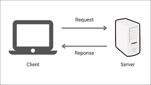
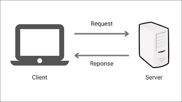

ENGR 102
Various projects utilizing Python programming including: data visualization, CSV File manipulation (read/write), engineering calculations, basic scripting.
Seam Carving GitHub Link
Developed a custom C++ program which enabled content-aware image resizing by assessing pixel contrast (RGB) to remove unnecessary backgrounds within an image.
Sudoku Solver GitHub Link
Developed a custom C++ program to automate solving of sudoku puzzles with SMT-LIB code – generating several hundred lines of propositional statements to solve sudoku puzzles in under a minute. Tested, validated, and refined the code using online automation tools (Z3 playground).
Library Catalog GitHub Link
Developed a library management system in C++ to find and manage school library books available in inventory, optimized for performance and fast information retrieval.
Client Server Program GitHub Link
Client-server program to obtain individual data points or whole raw file from the server. The client has to send properly-formatted messages to the server using a communication protocol defined by the server, using the TCP/UDP protocol to communicate over networks.